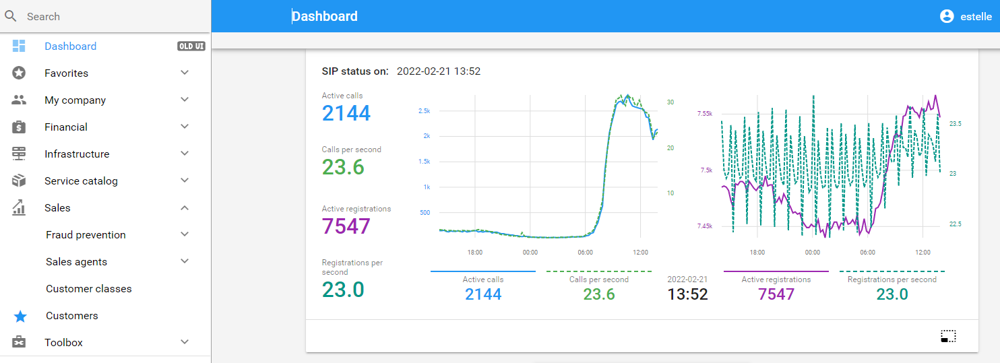
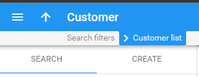
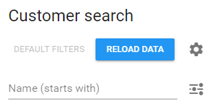
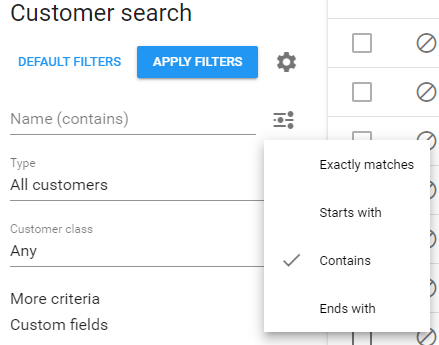
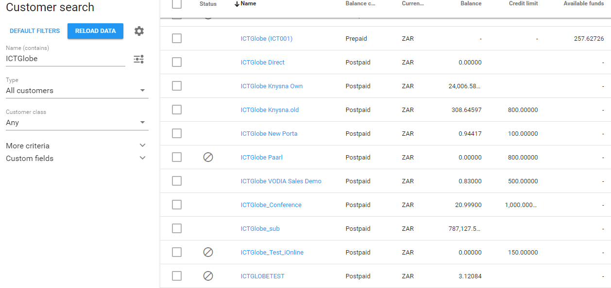
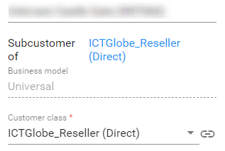

Customers
How to search for a customer on Porta
1. Left on the navigation menu, select Sales, then click on Customers.
NOTE: If you will be using the 'Customer' search function frequently, you can save it to your favourites for faster navigation.

Once navigated to the customer list, the task will be on 'Search' by default.
2. When searching for a customer, the Porta search method by default is set to 'starts with', which does not always have successful search results.

NOTE: When searching it is recommended to always select the 'Contains' option, from the search filters provided.
In regards to the customer search result, it should be noted that most customers created from the Ninja, has a 'Customer ID' not visible on Ninja yet on Porta, it is highly recommended for this reason to change the search filters to 'Contains'.

3. When the 'Contains' option was selected you can either search using the customer name, or the customer account number were applicable.
When you search using the customer name, a list of all the customers with a similar name will come up.
When you search using the account number, ideally only the customer with that account number should come up. There may be cases that the customers share the same account number, this is usually in the case of different branches, and were the billing is requested per branch.

4. From the list provided, should there be more than one customers obtained from the search option, select the customer you want to review.
The customer name and account number will display, as well as the reseller who's customer it is.

If you are already logged in on Porta, you can also search for customers from here .